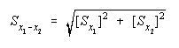
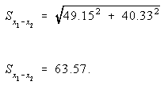

Confidence Levels
The 95-percent confidence range can be determined using the approximate standard error of the
estimate. To calculate the 95-percent confidence range for a given figure:
- Multiply the standard error by 1.96.
- Subtract the result of Step 1 from the given estimate to determine the bottom of the
range.
- Add the result of Step 1 to the given estimate to determine the top of the range.
We are 95 percent confident that this range covers the true value.
Using the same example from Figure 3.1, after calculating the standard error for the
estimated 381 trillion Btu of natural gas consumed in mercantile and service buildings to be 49
trillion Btu, to determine the confidence interval:
-
Multiply 49 trillion Btu by 1.96, which yields 96 trillion Btu.
- To determine the bottom of the range, subtract 96 trillion Btu from 381 trillion Btu, which
yields 285 trillion Btu.
- To determine the top of the range, add 96 trillion Btu to 381 trillion Btu, which yields 477
trillion Btu.
It can then be said with 95-percent confidence that the natural gas consumption in mercantile
and service buildings in 1992 was between 285 trillion Btu and 477 trillion Btu.
Statistical Significance Between Two Statistics
The difference between any two estimates given in the Detailed Tables may or may not be
statistically significant.
The standard error of the difference between two independent variables is computed as:

where Sx1 is the standard error of the first estimate and
Sx2 is the standard error of the second estimate. The
result of this computation is to be multiplied by 1.96, and if this result is less than the difference
between the two estimates, the difference is statistically significant.
For example, in 1992, mercantile and service buildings consumed an estimated
381 trillion Btu of natural gas, while health care buildings consumed an estimated
189 trillion Btu, for an estimated difference of 192 trillion Btu. The standard
error for the 381 trillion Btu estimate (Sx1)
is 49.15, and the standard error for the 189 trillion Btu estimate (Sx2)
is 40.33:

Multiplying 63.57 by 1.96 yields 124.6. Since 124.6 is less than 192, it can
be said that the difference between consumption in mercantile and service and
health care buildings is statistically significant.


File Last Modified: April 7, 1997
- Contact:
- Joelle Michaels
- joelle.michaels@eia.doe.gov
- CBECS Manager
-
URL: http://www.eia.gov/consumption/commercial/data/archive/cbecs/cbecs4d.html
If you are having any technical problems with this site, please contact the EIA Webmaster at
wmaster@eia.doe.gov
|